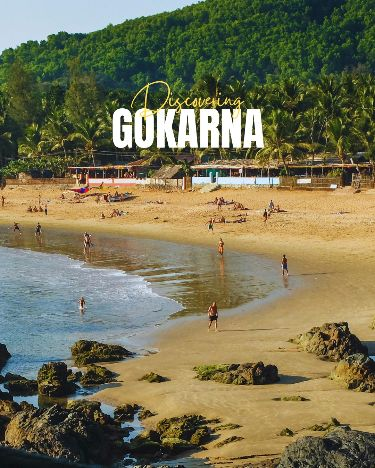

Gokarna is a peaceful coastal town in Karnataka that offers pristine beaches, ancient temples, and a laid-back atmosphere. It's the perfect alternative to crowded beach destinations like Goa.
Gokarna combines spiritual heritage with natural beauty. The town is known for its beautiful beaches that remain relatively untouched and peaceful, making it ideal for those seeking tranquility.
- Om Beach - shaped like the Om symbol
- Kudle Beach - perfect for swimming and relaxation
- Half Moon Beach and Paradise Beach - accessible by trek or boat
- Mahabaleshwar Temple - ancient Shiva temple
- Beach hopping and trekking trails
October to March offers the most pleasant weather. Avoid monsoon season (June to September) as beaches can be rough.
The nearest railway station is Gokarna Road (about 10 km away). You can also reach via bus from Goa, Bangalore, or other Karnataka cities. The nearest airport is Goa's Dabolim Airport.